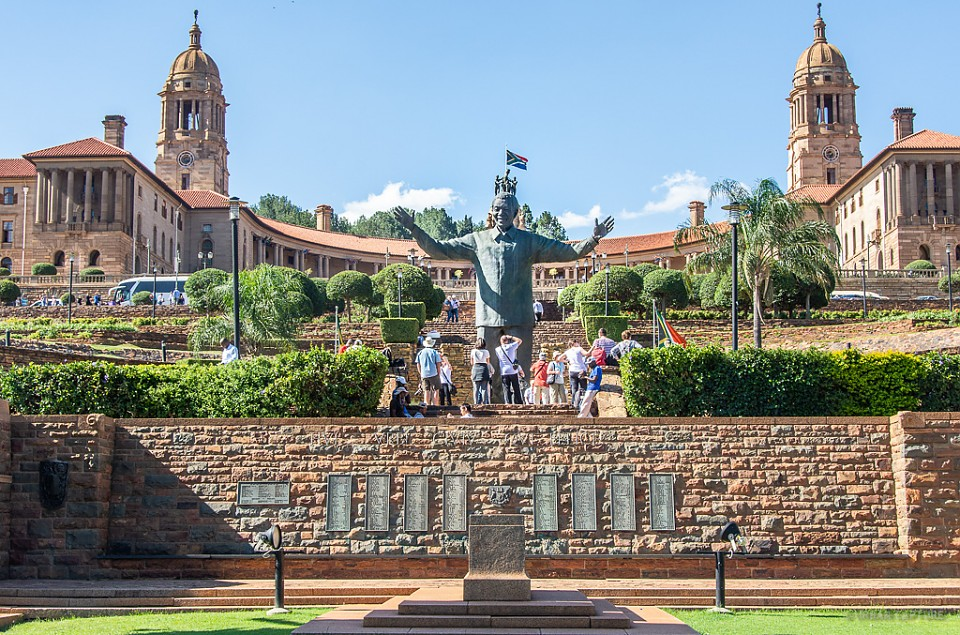

Foreign Language
Swahili language, also called kiSwahili, or Kiswahili, Bantu language spoken either as a mother tongue or as a fluent second language on the east coast of Africa in an area extending from Lamu Island, Kenya, in the north to the southern border of Tanzania in the south.
Knowing another language like Swahili is not just another hard skill you can add to your resume. Swahili is very useful if you`re working broadly across East Africa, won`t be settled in one place, and will need to communicate with a variety of people across national and ethnic lines. Basically, Swahili being a trade language is very useful in business. As a matter of fact employers are always looking for people that can expand their business overseas and being able to speak Swahili can lead you to land a better job and boost your career! Swahili will definitely make it easier for one to build relationships and trust when working with people who speak Swahili, and it`s a bit more efficient than trying to learn many other different tribal languages of East and Central Africa.
| English | Swahili |
|---|---|
| Hello | Habari |
| Goodbye | Kwa heri |
| thank you | asante |
| Welcome | Karibu |
| Good morning | Habari ya asubuhi |
| Good afternoon | Habari ya mchana |
| Please | Tafadhali |
Historical Places in Tswane
The Union Building
- The Union Buildings are considered South Africa's Architectural masterpiece.
- Designed and built by Herbert Baker, the Union Buildings houses the Administrative offices of the Union of South Africa.
- Today it is still the official seat of government and houses the offices of the President of South Africa.
Burgers Park

- The oldest park in Pretoria and now a national monument
- Burgers Park lies adjacent to Melrose House; George Heys designed Burgers Park, which was completed in 1892.
- Today a declared heritage site, the park was only officially named Burgers Park during 1894.
The Church Square
- The Church Square is the square at the historic centre of the city of Pretoria, Gauteng, South Africa.
- The founder of Pretoria, Marthinus Pretorius, determined that the square be used as a market place and church yard.
- It was subsequently named for the church buildings that stood at the centre of the square from 1856 to 1905